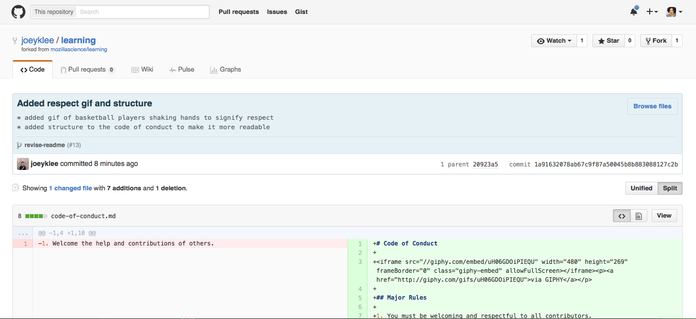

GitHub for Collaboration On Open Projects
Format
This is designed as a in-person, facilitated workshop with pairs of learners working together on each other's repositories. It could also be done online.
Target Audience
Project Leads and Contributors
Materials
- Two people with projects already hosted on GitHub
- Computers to work on
- An Internet connection to access the GitHub site
Introduction
GitHub is a web-based interface for version control, a way of keeping track of changes made to a collection of working documents. GitHub provides a structure and space for communicating about collaborative work on open projects. With bit of set-up, and a good workflow, you can make your project accessible and transparent, and create a respectful and productive working environment for your collaborators.
This exercise walks you through a workflow for collaboration on open projects, and demonstrates good communication with contributors. You'll need a partner for this exercise. And you'll each play two roles: you'll act as "project lead" on your own project, and "contributor" on your partner's project, as desginated in the steps below.
Before you start, provide your partner with a link to your repository. Your repo should look something like this (with your own content, of course).

Steps to Complete
-
Add Files
As project lead: add any new files you've created to your repo (readme.md, roadmap.md, contributing.md). Give the file a name, and the .md extension so you can use markdown for formatting.
-
Make a Label
As project lead: Make a new label. Click the "Issues" tab, then look for the labels tab, just to the right of the "filter" box. Add a label called "good first bugs."

-
Make An Issue
As project lead: create an issue in your own repo to document a "good first bug". A good first bug is something simple that a new contributor can work on, to try out contribution and get comfortable with the workflow. It's work that's useful to the project but relatively easy... not so difficult as to be overwhelming or discouraging for someone new to your project. An example of a good first bug for this exercise: fix a typo in the readme, add a badge, add a science fox, etc.

-
Comment On An Issue
As contributor: Go to your partner's repo, find the "Good First Bug" issue. (Click on the issue button to see all the issues.)

Make your comment! Introduce yourself and volunteer to work on this issue!

-
Reply to a Comment
As project lead: In your own repo, go to the issue that's just been commented on. Reply to your new contributor and assign this issue to yourself (you should act as a mentor, and offer to answer any questions). Assigning issues is a good way to track which tasks are underway.

-
Fork and Branch
As contributor: Go to your partner's repo and fork it. The fork button is in the top right corner.
GitHub may take a moment to fork your repo!

If you have multiple organizations, you may have to designate where the fork will live.

You'll see that the fork now exists in as part of your own GitHub Account

Now create a branch in your forked copy.

Name this branch. You should give it a name that relates to the feature or change you're working on. You'll get confirmation that the branch was created, and see it in your branches dropdown menu.

-
Commit
As contributor: Make a change in this branch, completing the task from the "good first bug issue".

Write a great commit message! The top line should summarize your changes. Include details in the field below.

-
Make a Pull Request
As contributor: Make a pull request to the orginal (upstream) repo.

Write a good message to go along with your request. You may want to link this request to the issue you're solving.

Make sure you have selected the correct branch where you made your changes for this pull request!

Here's where you can make that selection!

You'll see that your pull request has been submitted.

-
Review
As project lead: Review the pull request and leave a comment thanking the contributor... If you have any questions or comments or discussion points, bring them up here. You could also invite other collaboraters to weigh in. Make use of gifs and emoticons here, to emphasize your appreciation!
 -
Merge
As project lead: merge the changes from your contributor's pull request into the original repo.

-
Close the Issue
As project lead: close the issue with more thanks, gifs, and emojis!
Glossary
repository, or repo
a collection of documents related to your project, in which you create and save new code or content.
markdown
a lightweight way of annotating a document with instructions that tell a web browser how to format and display text.
version control
a way of tracking changes to a document or collection of documents. Version control is like a time machine, it can take you back to the moment your document was created, or any other point in time when you or a collaborator saved that document.
Git
the command-line software that tracks all changes to a collection of documents
GitHub
a service that hosts your repository online and helps you work with contributors. GitHub adds a web-based interface to version control.
fork
a copy of a repository that is saved in another user's GitHub account.
branch
a copy of a repo that is contained within the orignal repo. Branches are used to work on a project features without altering the original or "master" repo.
commit
a saved change to a document in a repository.
issue
a message on gitHub that outlines a task that needs to be completed.
pull request
a request to add a commit or collection of commits to a repository.
merge
the act of incorporating new changes (commits) into a repository.